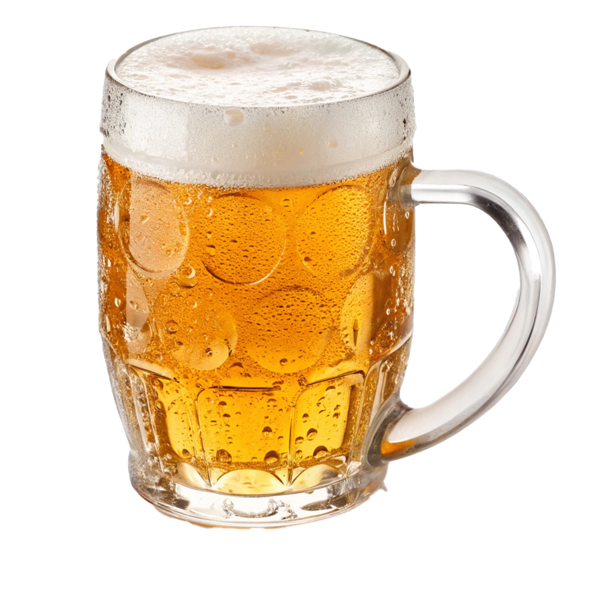

Лагер
Низовое брожение, чистый вкус, светлый цвет.

Этот сайт — короткий гид по миру пива. Здесь ты узнаешь, чем лагер отличается от эля, что такое IBU и почему стаут чёрный, как ночь.
Начни с обзора стилей или сразу загляни в таблицу сортов.
Низовое брожение, чистый вкус, светлый цвет.
Верховое брожение, фруктовые ноты, разнообразие.
Тёмный, плотный, с нотами кофе и шоколада.
«Пиво — это доказательство того, что Бог любит нас и хочет, чтобы мы были счастливы». — Бенджамин Франклин (приписывается)